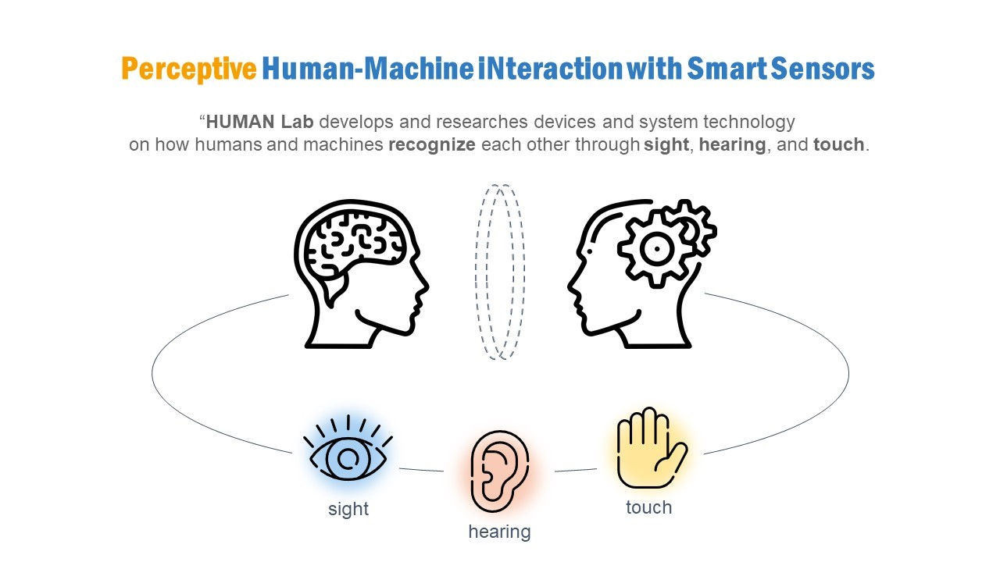
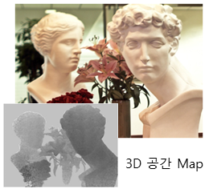
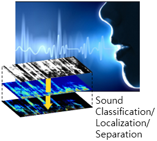
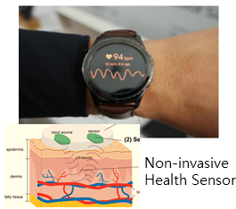
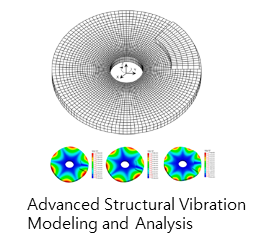

Lab Intro
Greetings

- Lab Intro
- >
- Overview
HUMAN LAB

Based on vision, acoustic, and vibration technologies, Human-Machine iNteraction Lab (HUMAN lab) researches devices and system technology for how humans and machines perceive each other through sight, hearing, and touch (vibration). Using the fundamental technologies—Vibration and Acoustics, Signal Processing, Vision System, and Machine Learning—we focus on the latest human-centric applications. Vision: we research 3D sensors and systems that recognize 3D information as humans do. This is utilized by autonomous vehicles and robots to accurately recognize objects. Acoustic: we research sound signal processing and machine learning with an advanced understanding of the human auditory system to enable machines to recognize sounds like humans. This field is spotlighted as the key technology for the new voice and sound recognition system. Vibration: we develop precise models and analysis techniques for vibration systems as our fundamental technologies. Applying this, we develop vibration-based biometric sensors that perceive biometric data such as glucose levels, blood pressure, skin, tissues, and individual identification by measuring human body vibrations. Also, we establish Digital Twin through the precise vibration analysis and modeling of the vibration system combined with various domains; furthermore, incorporating AI, we research Prognostics and Health Management technology that monitors machines’ condition and diagnoses faults.
Perceptive Human-Machine Interactions with Mechanical Device and Systems

- 3D Scene Recognition for Autonomous Vehicle and Robots
- Acoustic Recognition and Sound Transducers
- Biometric Sensors for Health Monitoring of Human Body
- Fundamentals of Structural Vibration, Acoustics, and Industrial Applications
3D Shape and Motion Measurement (LIDAR)

• High-definition, robust, compact 3D Lidar sensor for autonomous vehicle, drone and robots
• Time-of-Flight, Triangulation, Machine Learning based high-precision 3D information sensing
• A novel opto-mechanical signal processing methodology for depth extraction (AMCW, FMCW)
• 3D motion amplification using image signal processing
Acoustic Event/Source Recognition

• Cocktail Party Problem: classification, localization and separation of the sound under real environment
• Sound Event Detection by Deep learning
• Human auditory system (incl. HRTF) and vocal system analysis
• 3D sound localization mimicking human auditory system
• High-dynamic range, directional sound signal processing for robust and accurate sound recognition
Biometric Recognition by Human Body Vibration

• Non-invasive, wearable, continuous real-time health sensor for human body diagnosis (blood pressure, diabetes, skin, tissue etc.)
• Bio characteristics identification with human body vibration, coupled-field analysis and Machine Learning
• Virtual Patient System for CVDs
• Person identification by vibration
• A novel bio-signal processing scheme with Machine Learning for biomarker identification and health monitoring
Vibration Modeling/Analysis, PHM (Prognostics and Health Management)

• High fidelity vibration system modeling and analysis
• Experimental modal analysis
• Inverse Problems of structural vibration for structural parameter identification
• Structural health monitoring
• Uncertainty quantification
• Coupled field dynamic analysis including fluid-structure, biosystems, sub-structured systems
• Physical information and deep learning combined modeling
• High-fidelity Digital Twin